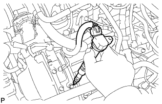
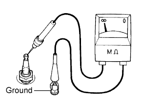
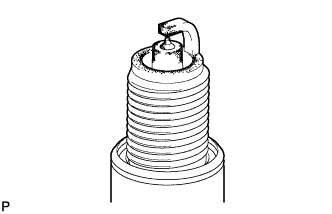
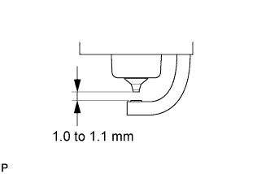
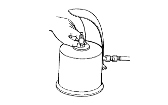

IGNITION SYSTEM > ON-VEHICLE INSPECTION |
| 1. PERFORM SPARK TEST |
Check for DTCs (Click here).
Check if sparks occur.
Remove the ignition coils and spark plugs (Click here).
Install the spark plug to the ignition coil and connect the ignition coil connector.
Disconnect the 8 injector connectors.
 |
Ground the spark plugs.
Visually check that sparks occur while the engine is being cranked.
Check that the wire harness side connector of the ignition coil with igniter is securely connected.
| Result | Proceed to |
| NG | Connect securely |
| OK | Go to next step |
Perform a spark test on each ignition coil with igniter.
If there is a cylinder where sparks do not occur, replace its ignition coil with the ignition coil of a cylinder where sparks occur normally.
Crank the engine and visually check that sparks occur at the cylinder with the normally operating ignition coil.
| Result | Proceed to |
| OK | Replace ignition coil with igniter |
| NG | Go to next step |
Inspect the spark plug.
Replace the spark plug with a normal one.
Perform spark teat again.
| Result | Proceed to |
| OK | Replace spark plug |
| NG | Go to next step |
Check power supply to the ignition coil with igniter.
Turn the engine switch on (IG).
Check that there is battery voltage at the ignition coil positive (+) terminal.
| Result | Proceed to |
| NG | Check wiring between engine switch and ignition coil with igniter |
| OK | Go to next step |
Check the VVT sensor (Click here).
Check the crankshaft position sensor (Click here).
Check the IGT signal circuit (Click here).
Connect the 8 injector connectors.
Install the 8 ignition coils and 8 spark plugs (Click here).
| 2. INSPECT SPARK PLUG |
 |
Check the electrode.
Using a megohmmeter, measure the insulation resistance.
| Tester Connection | Condition | Specified Condition |
| Spark Plug (terminal part) - Body Ground | Always | 10 MΩ or higher |
 |
Alternative inspection method:
Quickly accelerate the engine to 4000 rpm 5 times.
Remove the spark plug.
Visually check the spark plug.
If the electrode is dry, the spark plug is functioning properly. If the electrode is damp, proceed to the next step.
Check the spark plug for any damage on its threads and insulator.
If there is any damage, replace the spark plug.
| Manufacturer | Type |
| DENSO made | SK20R11 |
| NGK made | IFR6A11 |
 |
 |
If the electrode has traces of wet carbon, allow it to dry and then clean it with a spark plug cleaner.